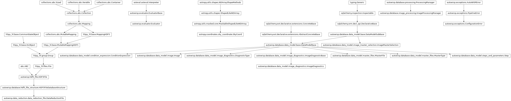

autowisp.database.photref_selection module
Class Inheritance Diagram

Photometric-reference selection helpers shared by the BUI and tests.
This module hosts the non-Django half of what the BUI’s
select_photref_views does:
compute_photref_candidates()walksprocessing.pendingforfit_magnitudesand groups the per-condition batches that still need a single photometric reference, leaving out entriesget_unbound_entries()finds already bound.bind_images_to_photref()writes theImageMasterSelectionrows for every batch image withinmax_photref_separationof the chosen photref.check_photref_fnames()refuses a photref whose magnitude fitting would write the same files as that of one already registered.record_single_photref()checks the chosen photref, registers it, and binds the batch to it.get_group_exclusions()reports what the magfit exclusion rule leaves out of a group still needing a photref, andget_offered_candidates()which of its images to offer as one.rank_photref_candidates()orders the offered images by a merit expression from the library, one ofget_merit_expressions().get_photref_exclusions()reports what each step’s exclusion rule leaves out of the images bound to each photref.
The view module calls these to populate the Django session / handle form submissions; the integration test calls them directly to mimic “user picks a photref” without going through HTTP.
- autowisp.database.photref_selection._evaluate_rule(rule, members, db_session, *, before_magfit)[source]
Return what rule excludes of the given observations fit together.
Decided by the engine’s own machinery, so what is reported is what the step will leave out.
- Parameters:
- Returns:
rule;num_images, the observations fit together;and either
verdicts, assummarize_excluded()returns them with each photometry’slabeladded, andexcluded, the members any verdict excludes, orerror, what the engine would refuse the rule with.
- Return type:
- autowisp.database.photref_selection._get_magfit_fnames(processing, photref_fname, db_session)[source]
Return the files magnitude fitting against a single photref may write.
- Parameters:
processing (ImageProcessingManager) – Gives the
fit_magnitudesconfiguration that applies to the reference.photref_fname (str) – The DR file of the single photometric reference.
db_session – The database session to read the configuration in.
- Returns:
The master photometric reference and statistics file names of every iteration, each mapped to the option that formats it.
- Return type:
- autowisp.database.photref_selection._get_rules(processing, dr_fname, db_session)[source]
Return the exclusion rule each step has for the images like a DR file’s.
Read from the configuration through the conditions the file’s header matches, as when the magnitude fitting file names of a single photometric reference are checked.
- Parameters:
processing (ImageProcessingManager) – Gives the configuration.
dr_fname (str) – A DR file of the images the rules are for.
db_session – An active SQLAlchemy database session.
- Returns:
{step name: rule}, in processing order, for each offit_magnitudes,epdandtfawith a rule set.
- Return type:
- autowisp.database.photref_selection.bind_images_to_photref(dr_fname, batch)[source]
Write ImageMasterSelection rows for batch images near the photref.
Reads the fit_magnitudes config to get
max_photref_separation(which may be conditional), then for each image inbatchcomputes the angular separation between the image center and the photref center. Images whose separation is withinmax_photref_separation * photref_diagonal_fovare bound to the photref via an upsert intoImageMasterSelection.- Parameters:
dr_fname – Path to the photref DR file that was just registered as a
single_photrefmaster viaImageProcessingManager.add_masters().batch – List of
(calibrated_fname, dr_fname, image_id, channel)tuples – the candidate images from the same condition group. Onlyimage_idandchannelare consumed here; the first two slots exist for parity withcompute_photref_candidates’s return shape.
- Returns:
- The
(image_id, channel)entries bound, empty if the photref is not registered or its center is unknown.
- The
- Return type:
- autowisp.database.photref_selection.check_photref_fnames(processing, photref_fname)[source]
Raise if a single photref would share magfit files with a registered one.
Compares file names rather than looking for files, so a clash is found before either master is built.
fit_magnitudesrefuses to overwrite a file as well, but only once the second master is being built.- Parameters:
processing (ImageProcessingManager) – Gives the configuration that applies to each reference.
photref_fname (str) – The DR file of the single photometric reference about to be registered.
- Returns:
None
- autowisp.database.photref_selection.compute_photref_candidates(processing, db_session)[source]
Return the per-condition batches of images missing a photref.
Holds the data-gathering half of what
select_photref_views._get_missing_photrefdoes. The BUI calls this (and then writes the result into the Django session); the integration test calls it directly.Builds
processing.pendingfor thefit_magnitudesstep (optionally falling back to “demo” mode where every candidate is treated as pending), strips images whosesolve_astrometryprerequisite failed, groups the survivors by master-condition values, and for each non-empty group produces a(master_values, batch)tuple wherebatchis the list of(calibrated_fname, dr_fname, image_id, channel)entriesbind_images_to_photref()expects.- Parameters:
processing – A fresh
ImageProcessingManager. Itspendingattribute is populated as a side effect.db_session – Open SQLAlchemy session.
- Returns:
"demo"(bool)True iff no images were actually pending
fit_magnitudes– the caller may then surface every candidate for inspection rather than only the unbound ones."candidates"(list[dict])One entry per
(step_id, image_type_id)inprocessing.pending. Each entry has:"step_id"(int)"image_type_id"(int)"master_expressions"(list[str]) – the condition expressions defining a photref’s identity."groups"(list[tuple]) – a tuple of(list(master_values), batch)per group of images sharing the same master-condition values.
- Return type:
dict with keys
- autowisp.database.photref_selection.get_group_exclusions(batch, db_session)[source]
Report what the magfit exclusion rule excludes of a group needing a ref.
Reported before a reference is chosen, to inform the choice: the images fit together once it is are those of the group near enough to it, so the group is the estimate available when choosing. Only the magnitude fitting rule applies, the single photometric reference belonging to magnitude fitting.
- Parameters:
batch – The group’s images, as
compute_photref_candidates()gives them:(calibrated_fname, dr_fname, image_id, channel).db_session – An active SQLAlchemy database session.
- Returns:
- As
_evaluate_rule()returns, or None if no magfit rule is set for the group.
- As
- Return type:
dict or None
- autowisp.database.photref_selection.get_merit_expressions(library)[source]
Return the library expressions candidates can be ranked by, by name.
Those giving one value per entry of a photref group: taking at most one channel, which is bound to each entry’s own, and no photometry, since the group has not been magnitude-fit.
- autowisp.database.photref_selection.get_offered_candidates(batch, exclusions)[source]
Return which of a group’s images to offer as its single photometric ref.
An image the magnitude fitting rule excludes is not offered: as the reference it would spoil the first pass of the very fit the rule protects. Every image is offered where the rule decides nothing – it is unset or refused – or excludes them all, so that a broken or overzealous rule never leaves nothing to choose from.
- Parameters:
batch – The group’s images, as for
get_group_exclusions().exclusions (dict or None) – What
get_group_exclusions()returned for the group.
- Returns:
Per entry of batch, whether to offer it.
- Return type:
- autowisp.database.photref_selection.get_photref_exclusions(db_session)[source]
Report what each step’s exclusion rule excludes of each reference’s images.
The images bound to a single photometric reference are fit together:
fit_magnitudessplits its batches by reference, and EPD and TFA detrend the lightcurve points of one reference at once. The rule applied to them is the one configured for the reference.- Parameters:
db_session – An active SQLAlchemy database session.
- Returns:
- A dict per single photometric reference with images bound
to it and per step with a rule set for it, by reference and then in processing order:
photref, its DR file,step, and what_evaluate_rule()returns.
- Return type:
- autowisp.database.photref_selection.get_unbound_entries(entries, master_type_id, db_session)[source]
Return the entries not yet bound to a single photometric reference.
Bindings are per (image, channel), and so is the check: a photref group need not be one channel. Under a
must_matchsuch asCLRCHNL[0].upper(),G0andG1of one image are in one group, and an image bound in one of them still needs its other entry bound.
- autowisp.database.photref_selection.rank_photref_candidates(batch, merit, offered, db_session)[source]
Return the offered entries of a photref group, best first.
The merit and every diagnostic recorded for them are evaluated over the offered entries alone, so an aggregate such as
nanrankranks each candidate among the other candidates, and the images the magnitude fitting exclusion rule leaves out do not shift it.- Parameters:
batch – The group’s entries, as for
get_group_exclusions().merit (str or None) – The name of the library expression to rank by, one of
get_merit_expressions(); None to keep the order of Julian date.offered – Per entry of batch, whether to offer it, as
get_offered_candidates()gives it.db_session – An active SQLAlchemy database session.
- Returns:
- list: The positions in batch of the offered entries: highest
merit first and no merit (NaN) last, ties in order of Julian date. An entry whose image has no Julian date is left out.
- dict:
{quantity: array}, the merit under its name and every diagnostic recorded for the offered entries, one value per position returned, in the same order.
- Return type:
- autowisp.database.photref_selection.record_single_photref(dr_fname, batch)[source]
Register a single photref and bind to it the batch images near it.
- Parameters:
dr_fname (str) – The DR file to register as the reference.
batch – The candidate images, as for
bind_images_to_photref().
- Returns:
The
(image_id, channel)entries of batch bound to it.- Return type: